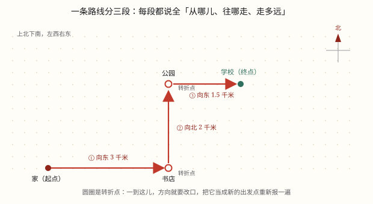

方向与位置、用数对确定位置和描述路线
先用八个方向大致定位，再配上角度和距离精确描述：「北偏东 30°，距离 500 米」。
| 所属主题 | 图形与位置 |
|---|---|
| 所属模块 | 图形与几何 |
| 课标学段 | 第三学段（5~6年级） |
| 前置知识 | 线段、射线、直线与角的认识 |
| 核心素养 | 空间观念几何直观应用意识符号意识 |
教材定位
人民教育出版社《2024年版》
对应六上第 1 单元「确定位置」：用方向和距离确定位置。；对应六上第 1 单元「确定位置」：用数对确定位置。；对应六上第 1 单元「确定位置」：描述简单的路线图。
课标要求
| 图形与几何·图形的位置与运动 | 能根据参照点的方向和距离确定物体的位置；会在实际情境中，描述简单的路线图（例35）。 印刷第 33 页 行为动词：掌握 |
|---|---|
| 综合与实践·主题活动 | 在生活情境中，认识东北、西北、东南、西南四个方向，了解“几点钟方向”，会描绘物体所在的方向，发展空间观念（例56）。 小学部分 行为动词：经历 |
| 图形与几何·图形的位置与运动 | 能用有序数对（限于自然数）表示点的位置，理解有序数对与方格纸上点的对应关系（例36）。 印刷第 33 页 行为动词：理解 |
说明
描述一个物体在哪，有两套办法。
第一套：八个方向。在东、南、西、北四个基本方向之间，再加入东北、东南、西北、西南，共八个。日常生活中「学校在小明家的东北方向」这样描述就够用。
第二套：方向 + 角度 + 距离，用于需要精确定位的场合，比如航海、导航、地图作业。写法如「北偏东 30\degree，距离 500 米」。
「北偏东 30\degree」的意思是：以正北为基准，向东偏转 30\degree。基准方向写在「偏」字前面，偏转方向写在后面——这个顺序不能反。
（用数对确定位置）
在教室里找一个人，如果只说「第 3 列」，竖着那一排的人都会站起来；只说「第 2 行」，横着那一排的人都会站起来；只有说「第 3 列第 2 行」，站起来的才只有一个人。要两个数，才能确定一个位置。
先说清楚两个词：竖排叫列，横排叫行。人教版方格图有一个约定——列和行都从 0 开始编号，最左边那条竖线是第 0 列，最下面那条横线是第 0 行，交点就是 (0, 0)。教室里数座位时通常从 1 开始，说「第一列、第一行」；同一张图里，起数标准要统一，不能一半从 0 数、一半从 1 数。
把列数和行数按顺序写进小括号，中间用逗号隔开，就叫数对，记作 (\text列, \text行)。(3, 2) 读作「数对三二」，意思是第 3 列第 2 行。先写列，后写行，这个顺序不能换：(3, 2) 和 (2, 3) 是两个完全不同的位置。
为什么偏偏要两个数？因为一个数只能管一个方向。第 3 列是一整条竖线，上面的点行数各不相同；第 2 行是一整条横线，上面的点列数各不相同。一个数只能确定一条线，两个数相交，才确定一个点。
（描述路线图）
描述一条路线，本质上是把一段折线拆成几段直线，逐段交代。每一段都要说清三件事：
① 从哪里出发（观测点） ② 往什么方向走 ③ 走多远
到了拐弯的地方，就另起一段，把刚才的终点当成新的出发点，再说一遍这三件事。一直说到目的地。
例如：「从学校出发，向北偏东 30\degree 走 400 米到书店；再从书店向东走 300 米到公园；最后从公园向南偏西 45\degree 走 200 米到图书馆。」
画路线图同样逐段画：先定方向和比例尺，一段一段量着画，拐点处标上地名。
使用场景
导航 App：「前方 300 米右转」背后就是方向和距离的计算。
共享单车找车：App 上显示车在你的「东北方向 200 米」。
操场排队：体育老师喊「面向北，向左转」，就是用基本方向指挥。
台风路径预报：「台风中心位于某岛东偏南 25\degree 方向 600 公里处」。
教室座位表：第几列第几行是另一套定位方式（数对）。
（用数对确定位置）
教室座位表：新学期排座位，老师说「第 4 列第 3 行」，比「你坐小明后面那个」清楚得多。
电影院选座：电影票上印着「6 排 9 号」，这就是一对有顺序的数，进场对着排和号一走就到。
班级图书角：书架分成几列几层，说「第 2 列第 4 层」，一本书的位置就定死了，不用翻半天。
方格纸和棋盘：围棋盘、五子棋盘、地图上的方格编号，都是用两个方向的信息定位，和数对是同一套办法。
（描述路线图）
给外卖骑手指路：必须逐段说清，只说终点他找不到。
地铁导览屏：从 A 口出，向东 200 米，再向北 100 米。
运动会接力路线：每一棒的路线要提前画给运动员看。
停车场找车位：从入口进，向右前方 30 米，再左转 20 米。
春游集合：老师给家长发路线说明，逐段地标。
注意点
「北偏东 30\degree」不等于「东偏北 30\degree」。前者从北向东偏 30 度（离北更近），后者从东向北偏 30 度（离东更近），两者相差 30 度。
基准方向写在「偏」字前面，偏转方向写在后面。看准了再画。
方向和距离缺一不可：只说方向不知道多远，只说距离不知道在哪。
观测点是谁要先说清：「A 在 B 的北偏东 30\degree」是以 B 为观测点。反过来「B 在 A 的（ ）」方向正好相反——南偏西 30\degree。
图上距离要先看图例和比例尺，不能直接用尺子量的厘米数当实际距离。
（用数对确定位置）
先列后行，顺序不能反。(3, 2) 是第 3 列第 2 行，(2, 3) 是第 2 列第 3 行，两个点隔着一段距离。
起数标准要统一。人教版方格图从 0 起，教室座位常从 1 起；看图前先看清 0 在哪里，别把第 0 列当成第 1 列。
逗号和小括号都不能省。把 (3, 2) 写成 32，就变成一个数了，一个数只能定一条线，位置立刻说不清。
一个数不够用。只写 3，只能圈出第 3 列一整列，到底哪一个点，还得再加行数。
（描述路线图）
每一段的观测点都要换新：拐弯后出发点变成刚才的终点，不能一直用最初的起点。
方向和距离缺一不可，少一样对方就走不到。
往返路线方向相反、距离相同：去程是「北偏东 30\degree 400 米」，回程就是「南偏西 30\degree 400 米」，段数顺序也要倒过来。
画路线图要先定比例尺，否则画出来的长度没有意义。
拐点要标名称，不然读图的人不知道在哪儿换方向。

图 1：说准一个位置，方向、角度、距离一个都不能少

图 1：一个数只能圈出一条线，两个数相交才得到一个点

图 1：每到一个转折点，就换一个新的出发点重新说
为什么是这样
算理推导
先解决最粗的问题：一个东西在哪儿，至少要有个大致方向。于是人们定了东、南、西、北四个基本方向。
但四个方向太粗了——「在东北方向」可能差出 45 度。于是把相邻两个基本方向之间再平分，得到东北、东南、西北、西南，一共八个方向，精度提高一倍。
八个方向还不够精确怎么办？加角度。以某个基本方向为基准，说出偏转了多少度，方向就唯一确定了。
为什么写成「北偏东 30\degree」而不说「东偏北 60\degree」？因为习惯上取离得近的那个基本方向做基准。30 度离北近，就以北为基准；如果是 60 度，就该说「东偏北 30\degree」。
光有方向还是一条射线，不知道多远。所以必须再补上距离。方向定射线、距离定射线上哪个点，两者合起来才唯一确定一个位置。
最后注意观测点：方向和距离都是相对于某个参照点说的。换个参照点，方向和距离全变。所以描述位置的第一句话应该是「以……为观测点」。
（用数对确定位置）
先看一条线：第 3 列上所有的点，列数都是 3，行数却各不相同。所以「3」这个数只能圈出一整列，圈不出一个点。
再看另一条线：第 2 行上所有的点，行数都是 2，列数各不相同。所以「2」这个数只能圈出一整行。
把两个条件叠在一起：既在第 3 列、又在第 2 行。一条竖线和一条横线只相交于一个点，这个点就是 (3, 2)（看图 1 的红点）。
换成 (2, 3) 试试：第 2 列和第 3 行相交的是另一个点。列和行一交换，交点就换了地方，所以数对必须有顺序。
为什么从 0 起：方格图的格线本身就是一把尺子，最左边竖线记作 0、最下面横线记作 0，每个格点都能分到一对编号，一格不重、一格不漏。
（描述路线图）
先想清楚为什么不能只说终点。给外卖骑手打电话，你说「送到 3 号楼」，他不认识小区，根本找不到。你得说「从东门进，直走 100 米，看到花坛右转，再走 50 米」。
这套说法的结构是什么？把整条路拆成若干段，每段给三件事：起点、方向、距离。为什么必须三样？起点确定「从哪儿算起」，方向确定「往哪条射线走」，距离确定「在射线上的哪个点」。
到了拐弯处为什么要另起一段？因为方向变了，原来那条射线不再适用。新的一段必须重新交代起点（就是上一段的终点）、新方向、新距离。
所以一条有 n 个拐点的路线，就要说 n+1 段。漏掉任何一段，路线就断了。
回程为什么方向相反、距离一样？因为路线是同一条折线，只是倒着走。每一段的方向都要反过来（北↔南、东↔西，角度不变），距离不变，段的顺序倒过来。
画路线图时为什么要先定比例尺？因为纸上的厘米数要对应实际距离。没有比例尺，画出来的图只能看形状，量不出距离。
动手实验
站在操场中央，面向北。伸直右臂指向东，然后慢慢把手臂从北向东转，转到一半（45 度）时停下——这就是东北。现在再体会「北偏东 30 度」和「东偏北 30 度」的差别：前者是手臂从北出发向东转 30 度（还比较靠北），后者是从东出发向北转 30 度（已经很靠东了）。让同学站在两个方向上，你站在中间看，会发现两人相距约 30 度——差别相当大，绝对不能混。 （用数对确定位置） 在方格纸上画一张 6 列 4 行的格点图，用红笔描出第 3 列整列，用蓝笔描出第 2 行整行，看它们只交于一个点。再和同桌互相报数对找位置：一个人说 (4, 1)，另一个人用手指；故意把 (3, 2) 说成 (2, 3)，看看会指到哪儿去。 （描述路线图） 在方格纸上设计一条从教室到校门的路线，包含至少两个拐点。先实际走一遍，用步数估距离（一步约 0.5 米），用指南针或太阳定方向。回来后按「起点 + 方向 + 距离」逐段写成文字，交给同学照着走——看他能不能走到。走不到，就说明你漏了某一段或某个方向写反了。然后再让同学按你的文字倒着走回来，体会「往返方向相反」。这一步做完，路线图的规则你自己就总结出来了。
按场景的例题
例 1（场景：行程出行） 用导航找共享单车
App 显示一辆单车在你所在位置的「北偏东 30\degree 方向，距离 150 米」。它大概在什么位置？
解：以你所在位置为观测点，先面向正北，再向东偏转 30\degree 画一条射线，在这条射线上量出 150 米的点，就是车的位置。
答：在你北偏东 30\degree 方向 150 米处。
例 2（场景：自然现象） 看台风路径预报
预报说「台风中心在某岛东偏南 25\degree 方向」，这个方向是以哪个方向为基准、往哪偏？
解：以正东为基准，向南偏转 25\degree。基准在「偏」字前（东），偏转方向在「偏」字后（南）。
答：以正东为基准，向南偏 25\degree。
例 3（场景：行程出行） 描述两人的相对位置
已知「图书馆在学校的北偏东 40\degree 方向」，那么学校在图书馆的什么方向？
解：方向相反：北的反向是南，东的反向是西，角度不变。所以是南偏西 40\degree。
答：学校在图书馆的南偏西 40\degree 方向。
例 4（场景：校园生活） 判断描述是否完整
有人说「操场在学校的东边」，这个描述够吗？
解：不够。只说了方向，没说距离，无法知道具体在哪。还缺观测点（以学校为观测点这句倒是可以从语境推断）。
答：不够，必须补上距离，如「东偏北 20\degree 方向 300 米」。
例 5（场景：校园生活） 新学期教室座位表
小青坐在第 4 列第 3 行，用数对怎么表示？数对 (5, 2) 指的是第几列第几行的位置？
解：先列后行：小青的位置写作 (4, 3)。(5, 2) 的第一个数是 5、第二个数是 2，所以是第 5 列第 2 行。
答：小青是 (4, 3)；(5, 2) 是第 5 列第 2 行。
例 6（场景：购物消费） 电影院买票选座
电影票上写着「6 排 9 号」。如果方格图的横方向是号、纵方向是排，这个座位用数对怎么表示？
解：生活中的「号」是从左往右数的，相当于列；「排」是从前往后数的，相当于行。先列后行，写作 (9, 6)。
答：(9, 6)。注意不是 (6, 9)——排和号不能颠倒。
例 7（场景：校园生活） 班级图书角的书架
书架从左往右分 5 列、从下往上分 4 层。一本《昆虫记》放在第 2 列第 4 层，数对是多少？数对 (4, 2) 那一格放的是第几列第几层的书？
解：第 2 列第 4 层写作 (2, 4)；(4, 2) 是第 4 列第 2 层。两个数对调换顺序，位置完全不同。
答：(2, 4)；(4, 2) 是第 4 列第 2 层。
例 8（场景：上学日常） 方格纸上描点
方格图从 0 起编号。点 A 在 (1, 4)，点 B 在 (4, 1)，它们是同一个点吗？和 A 在同一列的点，数对有什么共同点？
解：A 是第 1 列第 4 行，B 是第 4 列第 1 行，一横一竖，不是同一个点。同一列的点列数相同，所以第一个数都是 1，形如 (1, \text行数)。
答：不是同一个点；与 A 同列的点第一个数都是 1。
例 9（场景：行程出行） 给来访家长指路
从校门到图书馆：先向北走 200 米到教学楼，再向东偏北 20\degree 走 150 米到花坛，最后向北走 100 米。请把路线完整描述出来。
解：逐段描述：「从校门出发向北走 200 米到教学楼；从教学楼向东偏北 20\degree 走 150 米到花坛；从花坛向北走 100 米到图书馆。」
答：共三段，每段起点、方向、距离齐全。
例 10（场景：行程出行） 写回程路线
去程是「从家向南偏东 40\degree 走 300 米到车站，再向东走 200 米到学校」。回程怎么走？
解：方向和顺序都反过来：先从学校向西走 200 米到车站，再从车站向北偏西 40\degree 走 300 米到家。
答：学校 → 西 200 米 → 车站 → 北偏西 40\degree 300 米 → 家。
例 11（场景：物流运输） 给快递员描述小区路线
有人说「从东门进，一直走到 3 号楼就行」，这个描述有什么问题？
解：缺少距离和拐点说明。「一直走」没说多远，也没说在哪拐弯，快递员无法照做。
答：应补上每段的距离与拐点，如「从东门进向北走 100 米，到花坛右转向东走 50 米即到」。
例 12（场景：行程出行） 按比例尺画路线图
比例尺是 1:5000，实际要走 400 米的一段路，图上应画多长？
解：400 米 = 40000 厘米，40000 ÷ 5000 = 8 厘米。
答：图上画 8 厘米。
常用推论
八个方向：东、南、西、北、东北、东南、西北、西南。
精确定位 = 方向（含角度）+ 距离，缺一不可。
「A 偏 B n\degree」中 A 是基准方向，B 是偏转方向。
相对方向相反：北↔南、东↔西，角度不变。
习惯取较近的基本方向做基准：偏离小于 45\degree 时就以它为准。
同一列的点，数对的第一个数相同；同一行的点，数对的第二个数相同。
数对 (a, b) 与 (b, a) 一般表示两个不同的位置，只有当 a = b 时才是同一个点。
在方格图上左右移动，只改变第一个数（列数）；上下移动，只改变第二个数（行数）。
当两个数都取自然数时，数对与方格图上的格点一一对应，不重不漏。
每段三要素：起点（观测点）+ 方向 + 距离。
有 n 个拐点的路线要分 n+1 段描述。
往返路线：方向相反、角度不变、距离不变、段的顺序倒过来。
画图先定比例尺：图上距离 = 实际距离 ÷ 比例尺分母。
易错点
错把「北偏东 30\degree」画成「东偏北 30\degree」。
为什么错看反了基准。前者从北向东偏 30 度，后者从东向北偏 30 度，两者相差 30 度。
正确看「偏」字前面的字：前面是北，就从北画起。
错只说方向不说距离，认为位置已经确定了。
为什么错一个方向对应一条射线，射线上有无数个点。必须再给距离才能定点。
正确方向 + 距离，两者都要说。
错把「A 在 B 的北偏东 40\degree」反过来答成「B 在 A 的北偏东 40\degree」。
为什么错换了观测点，方向应该反过来，不是保持不变。
正确反过来是「南偏西 40\degree」。
错在地图上直接用尺子量出的厘米数当实际距离。
为什么错图上距离要按比例尺换算才是实际距离。
正确先读比例尺，再换算。
错把「第 3 列第 2 行」写成 (2, 3)。
为什么错先列后行的规矩记反了，把行数写在了前面。
正确先写列 3，再写行 2，写作 (3, 2)。
错只写一个数 3，就说这是「第 3 列第 3 行」。
为什么错一个数只能定一条线。3 只说明在第 3 列，行数根本没给。
正确必须补上第二个数，例如 (3, 2) 才是唯一的点。
错电影票「6 排 9 号」写成 (6, 9)。
为什么错把「排」当成了列。号是从左往右数的列，排是从前往后数的行。
正确先号后排，写作 (9, 6)。
错认为方格图左下角不能写数对，因为「0 不算数」。
为什么错人教版方格图的列和行都从 0 起编号，0 也是一个位置编号。
正确左下角就是 (0, 0)，是正当的格点。
错整条路线都用最初的起点当观测点，说「从学校向北……再向北……」。
为什么错拐弯后出发点已经变了，还用老起点描述，方向就对不上。
正确每个拐点处另起一段，把上一段终点当新起点。
错回程时方向不反，写成「从学校向南偏东 40\degree 走 300 米」。
为什么错回程是原路返回，每段方向都要反过来，北变南、东变西。
正确回程是「向西 200 米，再向北偏西 40\degree 300 米」。
错描述时只给方向不给距离：「从校门向北，再向东，就到图书馆」。
为什么错没有距离无法定点，对方不知道该走多久。
正确每段都补上距离。
错画路线图时不看比例尺，凭感觉画长度。
为什么错没有比例尺，图上长度与实际距离无关，图就失去了测量价值。
正确先读比例尺，把实际距离换算成图上距离再画。
直观理解
描述位置就像打电话叫人：「往北走，再往东偏一点，大概两百米」。方向是「往哪边」，角度是「偏多少」，距离是「走多远」，三样齐全对方才能找得到。少说一样，对方就只能在一条街上来回找。而「北偏东」和「东偏北」的差别，就像站在十字路口——一个说的是往北走时稍微往东拐，另一个说的是往东走时稍微往北拐，两个地方能差出一整个街区。 （用数对确定位置） 数对像快递地址：只写「3 号楼」，能在小区里找到一整栋楼，却找不到是哪一户；再加上「2 单元」，才锁定一家。地址的顺序也不能随口改，「3 号楼 2 单元」和「2 号楼 3 单元」是两户人家。 （描述路线图） 描述路线就像给人打电话指路——你得站在对方的鞋子里想：他现在站在哪儿、该往哪边拐、走到什么标志物再换方向。每到一个拐弯，你就要「重新报一次位置」，因为对方的位置变了。回程的时候更好办：同样这几段路，倒着走一遍，每个方向掉个头就行，距离一步不变。
东南西北四个方，中间再加成八个。要说精确加角度，基准写在偏字前。方向距离两齐全，位置才能定得全。换个观测点来看，南北东西要掉转。 （用数对确定位置） 先列后行两个数，逗号隔开加括号；一个数儿一条线，两个数儿一个点。 （描述路线图） 路线描述要分段，起点方向加距离。每到拐弯另起头，前段终点是新起。回程方向全掉转，距离不变顺序移。画图先把比例定，量准才画不稀奇。